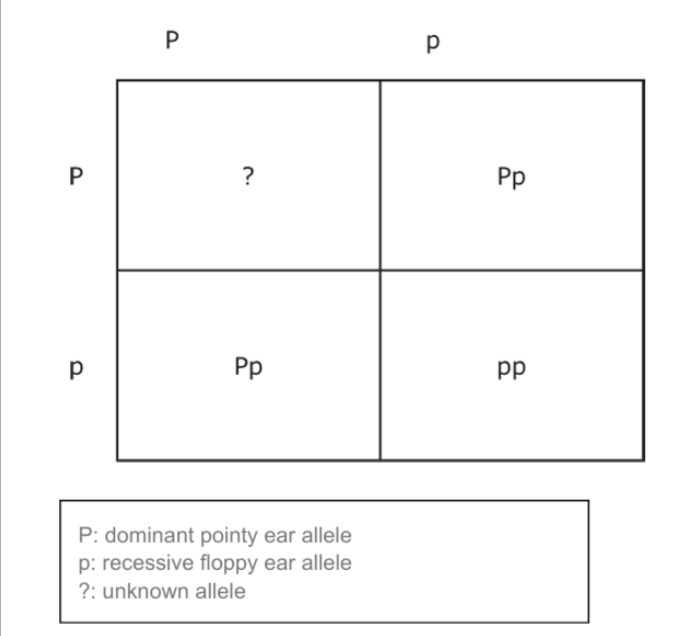

Question 1
In 1908, a huge explosion known as the Tunguska Event flattened trees for miles across a remote area of Russia. Scientists now think an asteroid or a comet entered Earth's atmosphere, causing the explosion. Ice core samples from an Ice sheet in Greenland reveal signs of this enormous explosion: deposits of ammonia equal to 5 micrograms per square meter. But how exactly did these telltale molecules form?
Hypothesis 1: The Tunguska explosion started forest fires, known to produce ammonia. Data indicates that such fires would have deposited an amount of ammonia over the Northern Hemisphere equaling 0.1 micrograms per square meter.
Hypothesis 2: Up to 1% of the object's mass might have been ammonia, and this ammonia might have spread over the Northern Hemisphere. Approximately 0.00005 micrograms of ammonia per square meter are predicted by this hypothesis.
Hypothesis 3: Since many compounds form in the presence of high heat, the ammonia could have been produced as the falling object heated the atmosphere. However, heat alone is not sufficient to cause the formation of ammonia.
Hypothesis 4: As it passed through the atmosphere, the object pushed air in front of it at high pressure. Nitrogen and hydrogen combine to form ammonia under similar pressure.
Question 2
Purple flowers, yellow seeds and inflated seed pods are all dominant traits in pea plants. The recessive traits being white flowers, green seeds and constricted seed pods.
Question 3
When an allele is represented by a capital letter, it is said to be dominant, and will always be expressed, whether coupled with another dominant allele or with a recessive allele. Recessive genes, which are represented by lowercase letters, are expressed only when an individual is pure and has two copies of the allele. In kittens, the gene for pointy ears is dominant and the gene for floppy ears is recessive. A kitten will express the pointy ear trait if the kitten is pure or has a hybrid of alleles. In order for floppy ears to be expressed on a kitten, the kitten must be pure for the recessive gene. Punnett Squares are charts used to predict the odds of specific gene combinations in offspring. Below is a Punnett Square of a cross between two heterozygous parents.
Question 4
Some of the stars you see in the night sky are so far away from Earth that the light from them has taken millions of years to reach you. So what you are really seeing is what those stars looked like millions of years ago. You are actually seeing into the past. To help us handle these huge distances, we use a special unit of measurement called a light-year to describe them. As its name suggests, a light-year is equal to the distance that light travels in one year. Light travels at 300,000 km per second in the vacuum of space.
Sirius is the name of a star that is approximately 86 trillion kilometers (8.6 light-years) away from the Earth.
Question 5
In a laboratory setting, concentrations for solutions are measured in molarity, which is the number of moles per liter (mol/L). Concentrations are often converted to more common units on the labels of household products. For a particular brand of bleach, the concentration of sodium hypochlorite (NaCIO) is reported on the bottle as 7.25% by mass.
The following information can thus be used to calculate the molarity of NaCIO in the bleach:
- 1L of bleach has a mass of 1,100 grams.
- 7.25% of the mass of bleach is NaCIO.
- 1 mol of NaCIO has a mass of 74.44 grams.
1. Scientist has estimated the mass of object that caused Tunguska event at 5 x 10^7 kg. If the object was the comet in which 1% of total mass was ammonia, how much ammonia did the comet contain? You may use the calculator.
2. If a plant that is homozygous dominant for flower color is crossed with a plant that is heterozygous for flower color, what percentage of the offspring will have yellow flowers?
3. What is the probability that an offspring will have pointy ears?
4. How long does the light from Sirius take to reach the Earth?
5. What is the molarity (mol/L) of NaCIO in the bleach? You may use the calculator.